Cam-Clay 试样的排水与不排水三轴压缩试验
问题描述
注意
本示例的工程文件可在 FLAC3D 中查看/运行。[1] 所使用的主数据文件（main data files）在本示例末尾给出。其余数据文件可在该工程中找到。
使用 FLAC3D 模拟 Cam-clay 土试样的常规排水和不排水三轴压缩试验。将临界状态下的应力和比容与解析预测进行比较。考虑了轻度超固结（LOC）和重度超固结（HOC）两种试样的响应。这组问题检验 FLAC3D 中修正 Cam-clay 模型的预测精度。
试样模型为具有单位尺寸的立方体。试样由具有若干性质的 Cam-clay 材料构成：
| 剪切模量（\(G\)） | 250 \(p'_1\) |
| 土体常数（\(M\)） | 1.02 |
| 正常固结线斜率（\(\lambda\)） | 0.2 |
| 弹性膨胀线斜率（\(\kappa\)） | 0.05 |
| 参考压力（\(p'_1\)） | 1 kPa |
| 前期固结压力（\(p'_{c0}\)） | 8 \(p'_1\) 和 40 \(p'_1\) |
| 正常固结线上参考压力处的比容（\(v_{\lambda}\)） | 3.32 |
初始时，试样处于对应于 \(p_0 = 5 p'_1\) 的各向同性压缩状态，且超孔隙压力为零（\(p'_0 = p_0\)）。轻度超固结情形的前期固结压力 \(p'_{c0}\) 为 8 × \(p'_1\)，重度超固结情形为 40 × \(p'_1\)。这两种情形对应的超固结比 \(R = p'_{c0} / p'_0\) 分别为 1.6 和 8。假定在恒定围压 \(p_0\) 和模拟的应变控制压板条件下进行试验时，剪切模量保持不变。考虑排水和不排水两种试验。关于 Cam-clay 塑性理论的详细讨论请参见 Wood（1990）。
闭合形式解
常规三轴试验中的平均压力 \(p\) 和偏应力 \(q\) 可表示为
其中 \(\sigma_1\) 为轴向应力，\(-\sigma_2\) 为围压。
由于试验过程中围压保持恒定，\((p,q)\) 平面内的总应力路径受以下关系约束
在形如 \(p = p'_0\)、\(q\) = 0 的初始条件下，积分可得
在排水试验中不产生超孔隙压力，有效应力路径与总应力路径重合，可写为
该应力路径示于下图。图中的虚线为临界状态线。
在不排水试验中，当流体体积模量远大于土体的体积模量（不可压缩流体）时，比容 \(v\) 保持不变，等于初始值 \(v_0\)，并且可以证明有效应力路径同样是明确确定的。
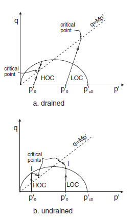
图 1：有效应力路径。
考虑超固结试样的情形。参照上图中的 (b)，只要应力状态位于初始屈服面以内，路径即对应于直线，
当发生塑性变形时，有效应力路径的形状由下式给出（Wood，1990，第 127 页）
其中 \(\Lambda = (\lambda - \kappa) / \lambda\)、\(\eta = q/p'\)，而 \(p'_i\) 和 \(\eta_i\) 定义了即将屈服时的有效应力状态，即上图中 (b) 里标为 \(I\) 的点。
请注意，在不排水条件下，对于任意边界条件（即不仅限于三轴压缩条件），屈服路径均由方程(2)所示形式的方程定义。
通过 \(p'_{c0}\) 的屈服曲线与直线路径 \(p' = p'_0\) 的交点给出（利用 \(R = p'_{c0}/p'_0\)）
将这些表达式代入方程(2)后，可得
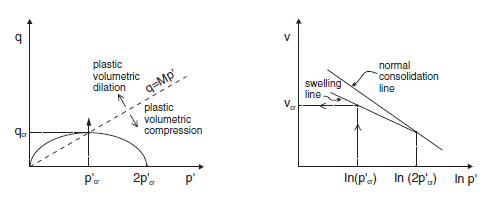
图 2：临界状态。
随着试验进行，路径向临界状态收敛，该状态由上图中 \((p',q)\) 平面内与临界状态线 \(q = M p'\) 交点处的点 \((p'_{cr},q_{cr})\) 表示。临界点处屈服面的法线与 \(q\) 轴平行。由于塑性流动法则为关联的，不可能再发生塑性体积应变。因此屈服面不会发生软化或硬化；最终屈服面对应于 \(p'_c\) 值 \(2 p'_{cr}\)，该值对 LOC 试样大于 \(p'_{c0}\)，对 HOC 试样小于 \(p'_{c0}\)。在恒定应力以及恒定的临界比容 \(v_{cr}\) 下，可发展出无限的塑性剪应变。
在排水情形下，临界状态定义为
其中 \(v_{cr}\) 值对应于通过 \(p_c = 2 p_{cr}\) 的弹性回弹线上 \(p = p_{cr}\) 处的比容。在此情形下，特定材料的临界状态仅取决于初始平均压力，不受前期固结压力影响。
在不排水情形下，由方程(3)表示的应力路径与临界状态线 \(\eta = M\) 的交点给出（假定 \(v\) 保持不变）
其中 \(v_0\) 为初始比容。
超孔隙压力 \(u\) 由下式给出
利用关于总压力的方程(1)，可得
而在临界状态下，
FLAC3D 模型
数值试验采用单个具有单位尺寸的网格单元进行。网格在 \(z\) 方向固定，并在模型顶部施加速度边界条件。规定初始各向同性压应力为 5 × \(p'_1\)，并在 \(x\) 和 \(y\) 方向施加恒定侧向围压 \(p_0 = 5 \times p'_1\)。为运行不排水示例，选用流体配置并关闭流动计算。
初始比容由程序内部计算（默认值），以与前期固结压力 \(p'_{c0}\) 和平均压力 \(p_0\) 处回弹线上的值相对应：
体积模量 \(K\) 由程序初始化为以下值
切线体积模量的最大值设为 800 × \(p'_1\)。
排水示例中使用了共 10,000 个循环，速度大小为 0.5 × 10-4 m/sec。对于不排水试验，在模型顶部每 40 步中的前 20 步施加大小为 0.5 × 10-6 m/sec 的压缩速度，其余 20 步速度为零。共使用 40,000 个循环。Biot 模量设为 2 × 104 × \(p'_1 /n\)（远大于体积模量的初始值，后者约为 102 × \(p'_1\) 量级）。（孔隙率 n 由比容通过 \(n = (v-1/v\) 导出。）监测平均压力、偏应力、比容以及（不排水情形下的）孔隙压力，直至它们收敛到临界状态。
FLAC3D 结果与讨论
将模拟结束时 \(p'_1\)、\(q\)、\(v\) 和 \(u\) 的数值与解析预测进行比较。结果列于表 2（Table 2） 和表 3（Table 3），表明相对误差小于 2%。
| R = 1.6 | R = 8 | 解析解 | |
|---|---|---|---|
| \(p\) | 7.573 | 7.583 | 7.576 |
| \(q\) | 7.718 | 7.747 | 7.727 |
| \(v\) | 2.811 | 2.811 | 2.811 |
| R = 1.6 | R = 8 | |||
|---|---|---|---|---|
| 数值 | 解析解 | 数值 | 解析解 | |
| \(p'_1\) | 4.234 | 4.229 | 14.05 | 14.14 |
| \(q\) | 4.312 | 4.314 | 14.42 | 14.43 |
| \(v\) | 2.927 | 2.928 | 2.687 | 2.686 |
| \(u\) | 2.203 | 2.209 | -4.241 | -4.334 |
不同试验的 \((p',q)\) 和 \((\ln p',v)\) 图见图 3（Figure 3） 至图 10（Figure 10）。轻度超固结和重度超固结试样在趋向临界状态过程中的响应与理论预测一致。
随着排水试验进行，轻度超固结试样的偏应力 \(q\) 稳定增大，比容稳定减小。重度超固结试样的偏应力先升高至峰值后下降，体积先减小后发生体积膨胀（见图 11（Figure 11） 至图 14（Figure 14））。不排水试验的主要特征在于：轻度超固结试样中孔隙压力稳定增大，而重度超固结土中孔隙压力先增大随后稳定减小（见图 15（Figure 15） 和 图 16（Figure 16））。
数据文件“drained.dat”和“undrained.dat”用于进行排水和不排水数值试验。文件“TriaxialCompressionTest.dat”用于将性质 mpc 分别设为 8 和 40，以处理轻度超固结和重度超固结情形。使用 FISH 函数施加速度边界条件并计算模拟结束时的相对误差。

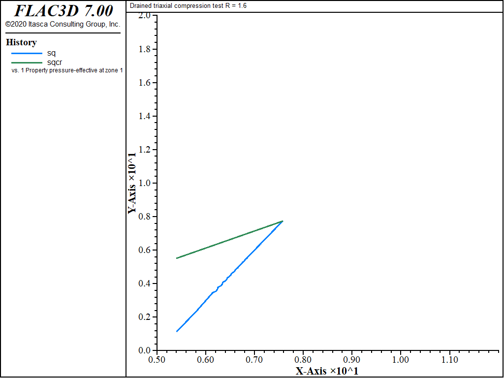
图 3：R = 1.6 的应力路径——排水试验。

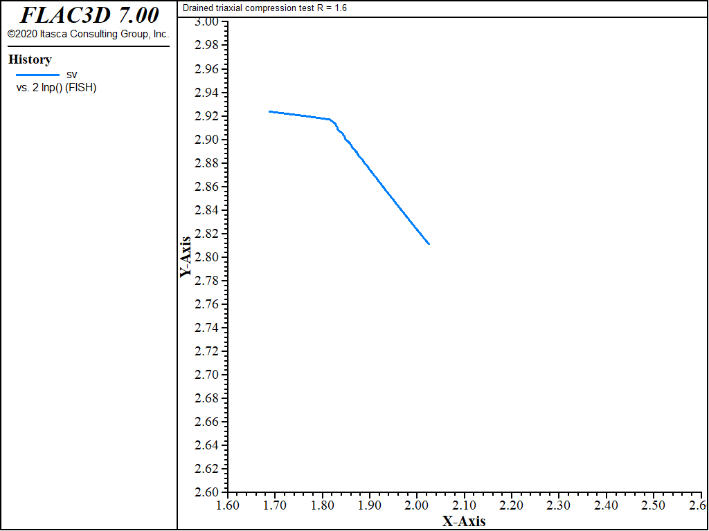
图 4：R = 1.6 的（\(\ln p, v\)）图——排水试验。

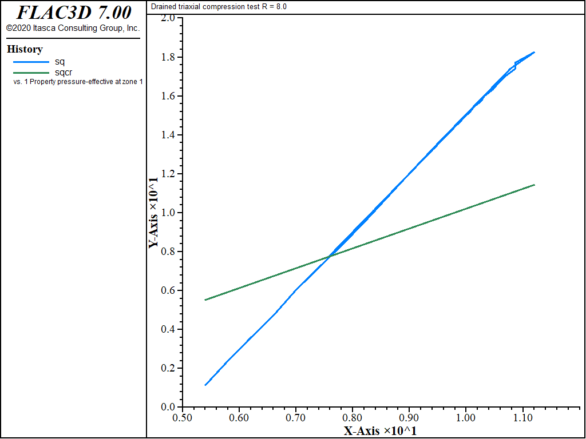
图 5：R = 8 的应力路径——排水试验。

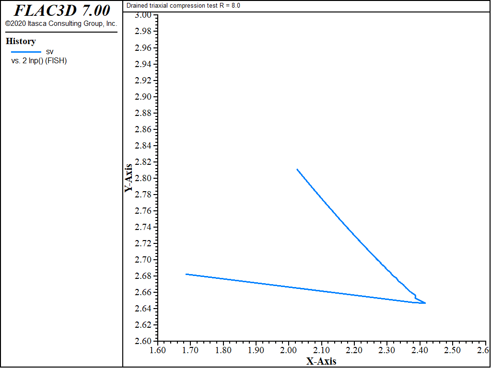
图 6：R = 8 的（\(\ln p, v\)）图——排水试验。

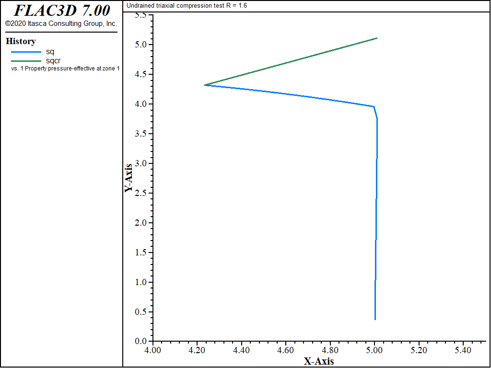
图 7：R = 1.6 的应力路径——不排水试验。

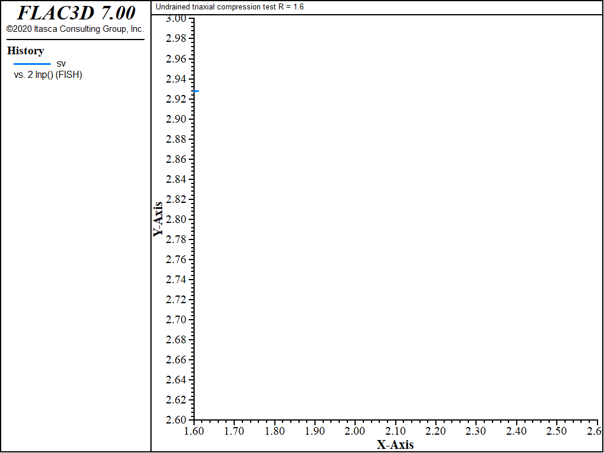
图 8：R = 1.6 的（\(\ln p, v\)）图——不排水试验。

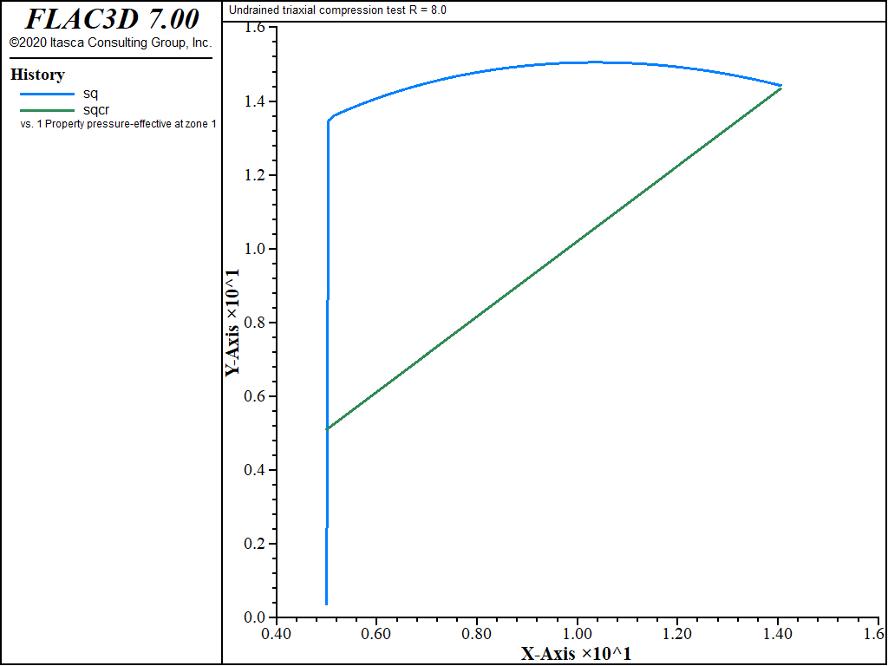
图 9：R = 8 的应力路径——不排水试验。

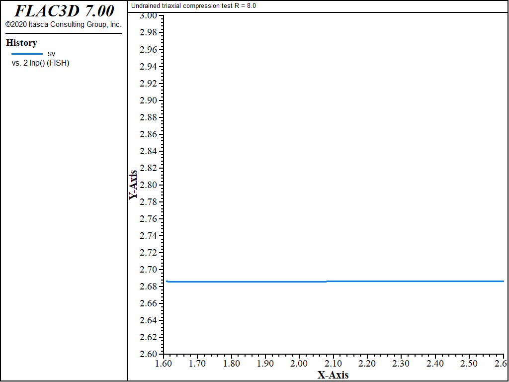
图 10：R = 8 的（\(\ln p, v\)）图——不排水试验。

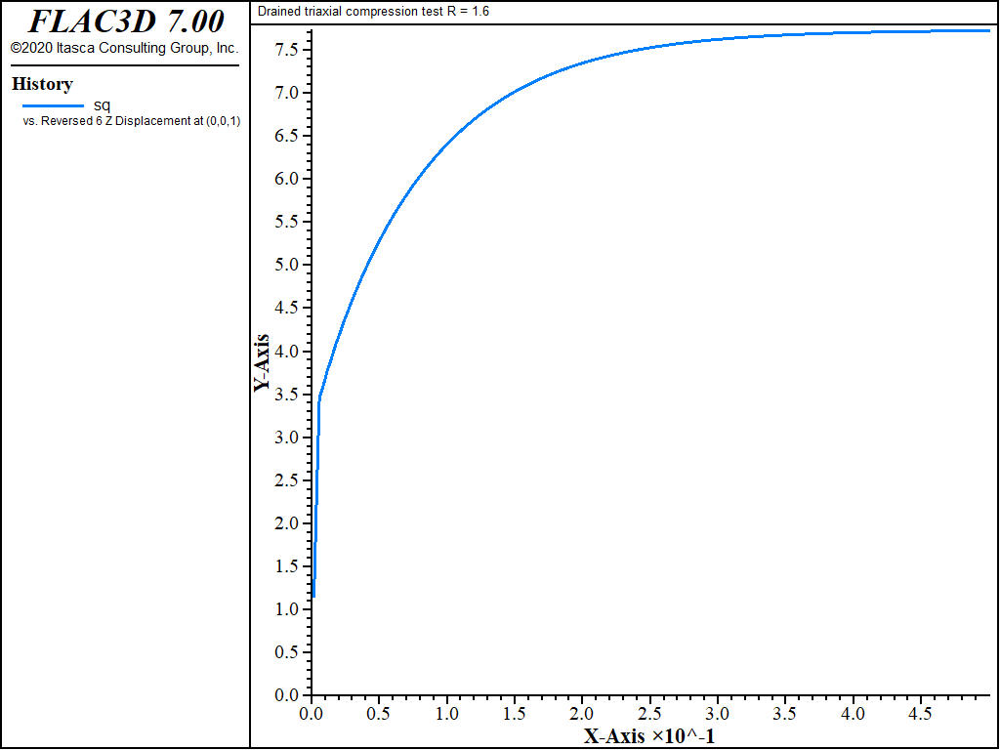
图 11：R = 1.6 时偏应力随轴向应变的演化——排水试验。

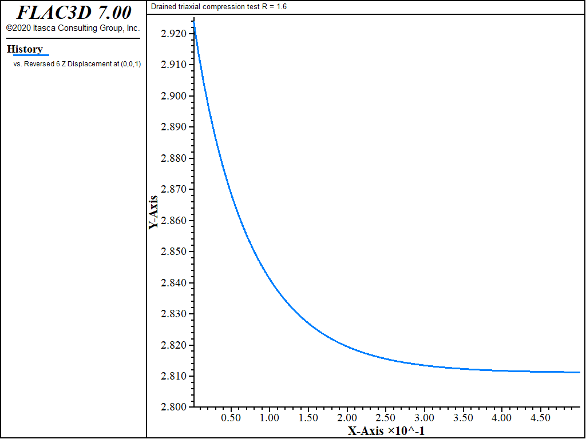
图 12：R = 1.6 时比容随轴向应变的演化——排水试验。

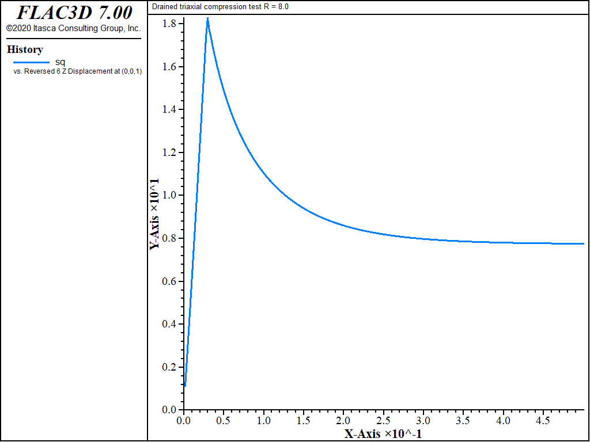
图 13：R = 8 时偏应力随轴向应变的演化——排水试验。

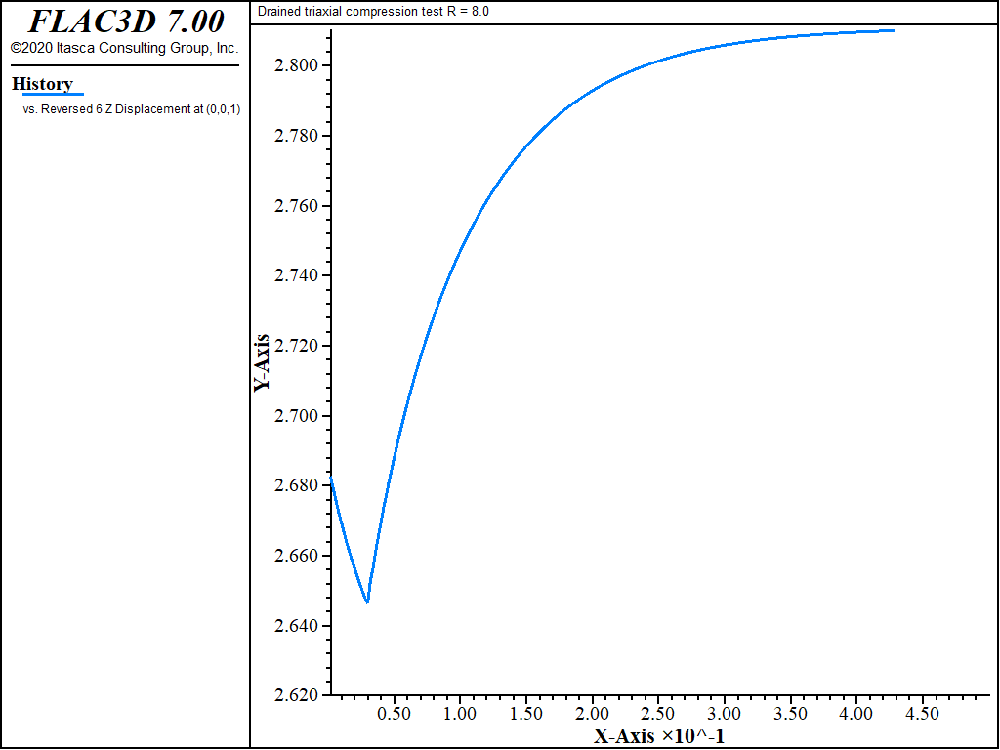
图 14：R = 8 时比容随轴向应变的演化——排水试验。

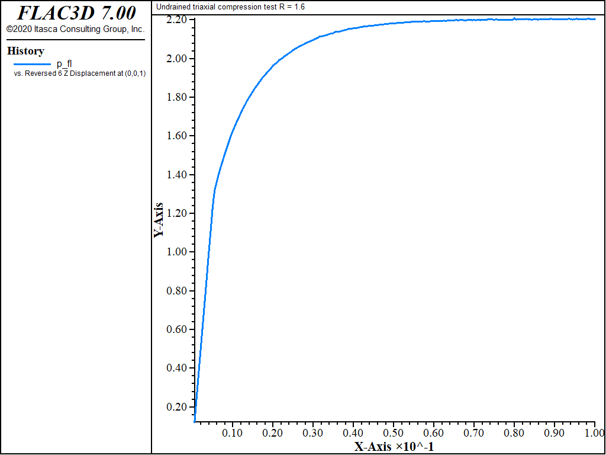
图 15：R = 1.6 时孔隙压力随轴向应变的演化——不排水试验。

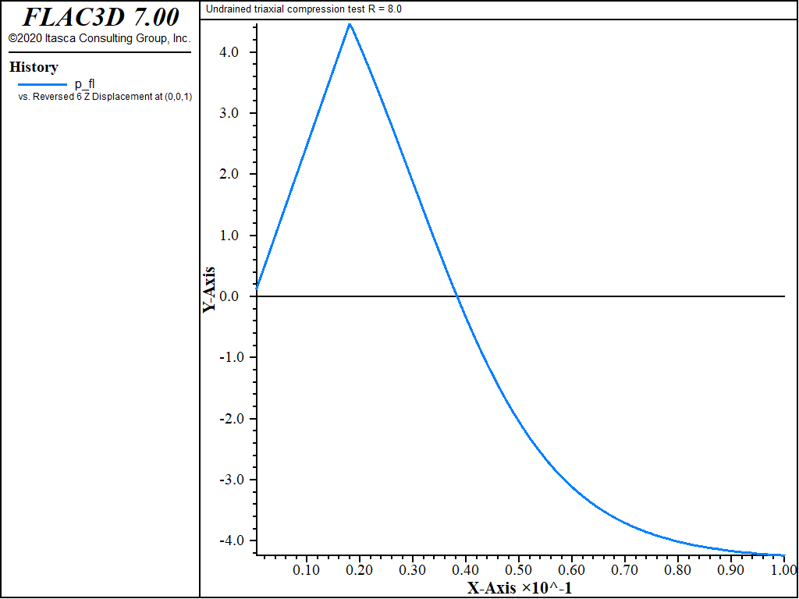
图 16：R = 8 时孔隙压力随轴向应变的演化——不排水试验。
参考文献
Wood, D. M. 《土的行为与临界状态土力学》。Cambridge: Cambridge University Press（1990）。
数据文件
TriaxialCompressionTest.dat
; Cam-clay 验证问题的主控文件
;
model new
fish automatic-create off
[global pre_pres = 8]
model title "Drained triaxial compression test R = 1.6"
program call 'drained'
model save 'draineda'
;
model new
fish automatic-create off
[global pre_pres = 40]
model title "Drained triaxial compression test R = 8.0"
program call 'drained'
model save 'drainedb'
;
model new
fish automatic-create off
[global pre_pres = 8]
model title "Undrained triaxial compression test R = 1.6"
program call 'undrained'
model save 'undraineda'
;
model new
fish automatic-create off
[global pre_pres = 40]
model title "Undrained triaxial compression test R = 8.0"
program call 'undrained'
model save 'undrainedb'
drained.dat
model large-strain off
;------------------------------------------------------------
; Cam-clay 试样的排水三轴压缩试验
;------------------------------------------------------------
zone create brick size 1 1 1
; --- 模型属性 ---
zone cmodel assign modified-cam-clay
zone property shear 250. bulk-maximum 800.
zone property ratio-critical-state 1.02 lambda 0.2 kappa 0.05
zone property pressure-preconsolidation [pre_pres] pressure-reference 1. ...
specific-volume-reference 3.32
; --- 边界条件 ---
zone gridpoint fix velocity-z
zone face apply stress-xx -5. range union position-x 0 position-x 1
zone face apply stress-yy -5. range union position-y 0 position-y 1
zone initialize stress xx -5. yy -5. zz -5.
; 用 FISH 初始化有效压力参数
; 对单个网格单元问题而言这有些小题大做，但可作为更大规模问题的示例。
fish operator initialize(zone)
zone.prop(zone,'pressure-effective') = ...
-tensor.trace(zone.stress(zone))/3.0 - zone.pp(zone)
end
[initialize(::zone.list)]
; ... 速度边界条件 ...
zone gridpoint initialize velocity-z -0.5e-4 range position-z 1.0
; 设置全局 FISH 函数，
; 用于记录由参数导出的量的历程
fish define lnp ; pressure-effective 的自然对数
local sp = zone.prop(zone.find(1),'pressure-effective')
if sp == 0 then
sp = 1
endif
lnp = math.ln(sp)
end
fish define sqcr ; pressure-effective * ratio-critical-state
local zone = zone.find(1)
sqcr = zone.prop(zone,'pressure-effective') * ...
zone.prop(zone,'ratio-critical-state')
end
; --- 历程 ---
history interval 40
zone history name 'sp' property name 'pressure-effective' zone 1
fish history name 'lnp' lnp
zone history name 'sq' property name 'stress-deviatoric' zone 1
fish history name 'sqcr' sqcr
zone history name 'sv' property name 'specific-volume' zone 1
zone history name 'disp' displacement-z position (0,0,1)
; 存储部分参数的初始值 -
; 供后续与解析解对比使用
[global pr0 = zone.prop(zone.find(1),'pressure-reference')]
[global ratio0 = zone.prop(zone.find(1),'ratio-critical-state')]
[global sv0 = zone.prop(zone.find(1),'specific-volume-reference')]
[global lambda0 = zone.prop(zone.find(1),'lambda')]
[global kappa0 = zone.prop(zone.find(1),'kappa')]
; --- 试验 ---
model cycle 10000
undrained.dat
model large-strain off
;------------------------------------------------------------
; Cam-clay 试样的不排水三轴压缩试验
;------------------------------------------------------------
model config fluid
zone create brick size 1 1 1
; --- 力学参数 ---
zone cmodel assign modified-cam-clay
zone property shear 250. bulk-maximum 800.
zone property ratio-critical-state 1.02 lambda 0.2 kappa 0.05
zone property pressure-preconsolidation [pre_pres] pressure-reference 1. ...
specific-volume-reference 3.32
; --- 边界条件 ---
zone gridpoint fix velocity-z
zone face apply stress-xx -5. range union position-x 0 position-x 1
zone face apply stress-yy -5. range union position-y 0 position-y 1
zone initialize stress xx -5. yy -5. zz -5.
; 用 FISH 初始化有效压力参数
; 对单个网格单元问题而言这有些小题大做，但可作为更大规模问题的示例。
fish operator initialize(zone)
zone.prop(zone,'pressure-effective') = ...
-tensor.trace(zone.stress(zone))/3.0 - zone.pp(zone)
end
[initialize(::zone.list)]
; --- 流体参数 ---
zone fluid cmodel assign isotropic
zone fluid biot on
model fluid active off
; --- fish 函数 ---
; ... 速度边界条件 ...
fish define cycle ; 开启 20 步，关闭 20 步
cycle = 1.0 - float(((global.step-1) // 20) % 2)
end
zone face apply velocity-z -0.5e-6 fish cycle range position-z 1.0
; 设置全局 FISH 函数，
; 用于记录由参数导出的量的历程
fish define lnp ; pressure-effective 的自然对数
local sp = zone.prop(zone.find(1),'pressure-effective')
if sp == 0 then
sp = 1
endif
lnp = math.ln(sp)
end
fish define sqcr ; pressure-effective * ratio-critical-state
local zone = zone.find(1)
sqcr = zone.prop(zone,'pressure-effective') * ...
zone.prop(zone,'ratio-critical-state')
end
; --- 历程 ---
history interval 2000
zone history name 'sp' property name 'pressure-effective' zone 1
fish history name 'lnp' lnp
zone history name 'sq' property name 'stress-deviatoric' zone 1
fish history name 'sqcr' sqcr
zone history name 'sv' property name 'specific-volume' zone 1
zone history name 'disp' displacement-z position (0,0,1)
zone history name 'p_fl' pore-pressure zone 1
; --- 试验 ---
model cycle 1
fish define bi ; 初始化 BIOT 模量
global v0 = zone.prop(zone.find(1),'specific-volume')
local n0 = (v0 - 1.) / v0
bi = 2.e4 / n0
end
zone gridpoint initialize biot [bi]
; 存储部分参数的初始值 -
; 供后续与解析解对比使用
[global pp0 = zone.prop(zone.find(1),'pressure-preconsolidation')]
[global kappa0 = zone.prop(zone.find(1),'kappa')]
[global lambda0 = zone.prop(zone.find(1),'lambda')]
[global ratio0 = zone.prop(zone.find(1),'ratio-critical-state')]
; 求解
model cycle 400000
尾注
| [1] | 要在 FLAC3D 中查看该项目，请使用程序菜单。
⮡ FLAC |
⇐ Smooth Square Footing on a Cohesive Frictionless Material | Lined Circular Tunnel in an Elastic Medium with Anisotropic Stresses ⇒
| 这些内容对您有帮助吗？… | FLAC3D © 2019, Itasca | 原文更新于 2020 年 10 月 8 日 |